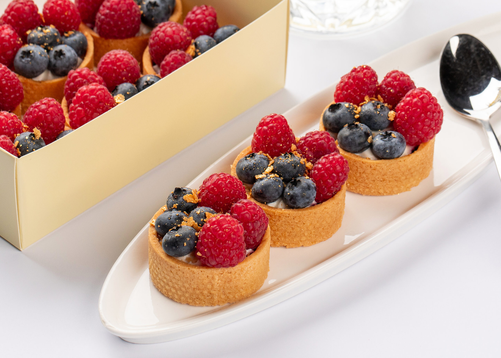

Торти

Капкейки


Інгредієнти(форма 18 см):
Шоколадні коржі:
яйця - 5 шт.
цукор - 130 г
ванільний цукор- 1 п.
масло 20 г
борошно 90 г
какао - 30 г
розпушувач 1 ч.л.
КРЕМ - ЧІЗ:
сир - 900 г
масло 300 г
сметана - 100 г
пудра - 150 г
Печиво "ОРЕО" - 18 шт.
ГЛАЗУР:
шоколад - 50 г
олія - 2 ст.л
СИРОП для просочування коржів:
вода - 70 мл
цукор - 1 ч.л.
ІНГРЕДІЄНТИ(форма 20 см)
БІСКВІТ:
яйця - 6 шт.
цукор - 240 г
молоко - 120 мл
олія - 90 г
борошно - 230 г
какао - 5 г
розпушувач - 18 г
барвник харчовий водорозчинний
ПРОСОЧУВАННЯ:
молоко - 100 мл
ванільний цукор - 10 г
КРЕМ:
вершки - 300 г
ц.пудра - 60 г
сир Маскарпоне - 250 г
ІНГРЕДІЄНТИ(форма 18 см)
ТІСТО на 2 коржі:
кефір - 400 г
яйця - 2 шт.
цукор - 150 г
ван.цукор - 1 п.16 г
масло - 100 г
сода - 1 ч.л.
оцет - 1 ст.л.
борошно - 300 г
какао - 30 г
КРЕМ-ЧІЗ:
сир - 900 г
пудра - 150 г
масло - 300 г
КАРАМЕЛЬНИЙ КРЕМ:
вершки 30% - 250 г
згущенка варена - 250 г
арахіс смажений - 200 г
Для глазурі:
білий шоколад - 50 г
молочний шоколад - 10 г
олія - 3 ст.л.
ІНГРІДІЄНТИ(на 15 стандартних капкейків)
ДЛЯ ТІСТА:
борошно - 200г.
розпушувач - 8г.
масло вершкове - 100г.
цукрова пудра - 150г.
яйця - 150 г. ( 3 шт категорія с2)
ваніль або ванільний екстракт.
молоко - 80г.
олія рослинна без запаху - 20г.
сіль - дрібка.
Усі інгрідієнти для приготування тіста мають бути кімнатної температури.
КРЕМ:
крем-сир - 400г.
цукрова пудра - 75г.
вершки 33-36% - 100г.
Усі інгрідієнти для приготування крему мають бути дуже холодні, це важливо.
Якщо ви випікаєте капкейки в тонких бумажняних формах, то їх треба помістити в металеву форму для випікання.
ІНГРІДІЄНТИ(на 6 шт)
Тісто:
Борошно - 75г.
Какао порошок - 20г.
Розупушувач для тіста - 5г.
Яйця - 1шт категорії с1.
Цукрова пудра - 75г.
Сіль - 2 г.
Молоко - 30г.
Вершкове масло - 10г.
Олія рафінована без запаху - 20г.
Збитий шоколадний ганаш:
Молочний шоколад - 200г.
Масло вершкове - 10г.
Вершки 33% - 270г.
Врахуйте, що цей ганаш у холодильнику стає досить твердим. Якщо ви хочете ніжніший крем, збільшіть кількість вершків на 50г.
Інгредієнти: (на 9 стандартних шт.)
КЕКСИ:
пшеничне борошно - 150 г
розпушувач для тіста - 1 ч.л. без гірки
сода - 1/4 ч.л.
дрібка солі
мак - 1 ст.л. (обсмажений)
кукурудзяний крохмаль - 1 ч.л.
яйце велике - 1 шт. (кімнатна темп.)
цукор - 110 г
ванільний цукор - 8-10 г
кефір - 125 г
олія рослинна без запаху - 46 г
вершкове масло розтоплене - 25 г
цедра 1 великого лимона.
лимонний сік (фреш) - 2 ст.л.
КРЕМ-ЧІЗ:крем-сир - 170-175 г
м'яке вершкове масло 82% - 53 г
цукрова пудра - 90-95 г
сухе молоко 6 г або кукурудзяний крохмаль - 1 г
лимонна цедра - 1-2 г
ваніль за смаком - 1-2 г ванільного цукру або 2 г ароматизатору
гелевий харчовий барвник (жовтий) - 1-2 краплі (за бажанням)
ІНГРЕДІЄНТИ(форма д.25 см)
ТІСТО:
борошно - 300 г
пудра - 50 г
масло - 160 г
яйце + вода = 70 г
ЛИМОННИЙ КУРД:
лимонна цедра - з 1 шт.
сік 1 лимону+вода 250мл
цукор - 70 г
крохмаль кукуруд.- 30 г
куркума - 1/4 ч.л.
масло - 50 г
жовтки - 2 шт.
МЕРЕНГА:
білки - 70 г
цукор - 140 г
вода - 35 г
Діаметр форми - 33 см
ДЛЯ НАЧИНКИ:
Малина - 500 г
Цукор - 150 г
Кукурудзяний крохмаль - 80 г
ДО ТІСТА:
Жовтки - 3 шт
Цукрова пудра - 80 г
Вершкове масло - 80 г
Ванільний цукор - 1 ч.л.
Борошно - 200-220 г
ДЛЯ КРЕМУ:
Грецький йогурт - 500 г
Білки - 3 шт
Цукор - 30 г
Ванільний цукор - 1 ч.л.
Сіль - дрібка
ІНГРЕДІЄНТИ:
ДЛЯ ТІСТА:
350 г Борошно
1 ст. л. Цукор
1/2 ч. л. Сіль
150 г Вершкове масло
1 шт. Жовток
1 дрібка Кориця
ДЛЯ НАЧИНКИ:
4 шт. Яблука
1 ч. л. Кориця
50 г Вершкове масло
2 ст. л. Цукор
Email: dessertworld@gmail.com
Телефон: +3806758431
Instagram: dessertworld